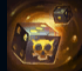
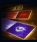
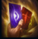
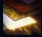
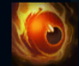

Twisted Fate
| Twisted Fate The Card Master | |
|---|---|
| Release date | 21.02.2009 |
| Class | Burst |
| Positions | Middle |
| Resource | Mana |
| Range type | Ranged |
| Adaptive type | Magic |
| Base statistics | |||
| Health | 534 – 2132 | Mana | 333 – 996 |
| Health regen. | 5.5 – 15.7 |
Mana regen. | 8 – 21.6 |
| Armor | 21 – 74.55 | Attack damage | 52 – 108.1 |
| Magic resist. | 30 – 38.5 | Crit. damage | 175% |
| Move. speed | 330 | Attack range | 525 |
Twisted Fate este un trișor și escroc notoriu, care își petrece viața trecând de la un joc de noroc la altul și fermecându-i pe toți cei cu care are de-a face. De-a lungul timpului, și-a câștigat ura și admirația celor bogați și a celor naivi din aproape întreaga lume. Rareori ia lucrurile în serios și are mereu un aer nonșalant și un zâmbet ironic pe buze. În plus, are întotdeauna un as în mânecă – și la propriu, și la figurat. |  |
ZARURI MĂSLUITE Când ucide o unitate, Twisted Fate își aruncă zarurile ''norocoase'', primind un bonus de 1-6 aur. |
||
|---|---|---|---|---|
 |
JOKERI Twisted Fate aruncă trei cărți, care provoacă daune fiecărei unități inamice prin care trec. |
|||
 |
ALEGE O CARTE Twisted Fate alege o carte magică din pachetul lui și o folosește în următorul atac, declanșând efecte bonus. |
|||
|  |
PACHET ARANJAT La fiecare 4 atacuri, Twisted Fate provoacă daune bonus. În plus, viteza sa de atac crește. |
|||
 |
DESTIN Twisted Fate prezice soarta inamicilor, dezvăluind toți campionii inamici și făcând posibilă utilizarea ''Porții'', care îl teleportează pe Twisted Fate spre orice locație-țintă în 1,5 secunde. |